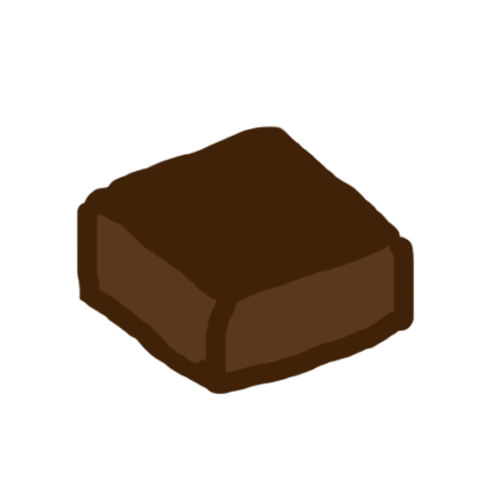
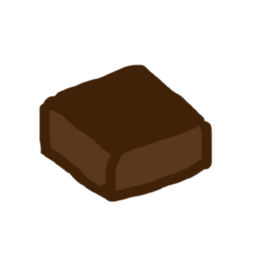

CRUST
- 2 cups pitted dates
- 2 cups raw nuts
- 1/4 cup gluten free oats
- 1/2 tsp pumpkin pie spice
PUMPKIN FILLING
- 1 cup pumpkin puree
- 3 1/2 Tbsp cornstarch
- 1/3 cup sugar
- 1/2 tsp pumpkin pie spice
- pinch sea salt
- 1 2/3 cup unsweetened milk
- 1/2 tsp vanilla extract
COCONUT WHIPPED CREAM
- 1 13.5 ounce can full fat coconut milk chilled overnight
- 2-5 Tbsp powdered sugar, depending on preferred sweetness
- 1/2 tsp pure vanilla extract
- To make the filling, place all dry ingredients in a saucepan and whisk to combine. Then add pumpkin puree and whisk again. Slowly pour in milk and stir again until well combined.
- Place over medium heat and bring to a low bubble - not boil - whisking often. Once it starts bubbling and getting thick, reduce heat to medium-low and continue cooking. Stir using a rubber spatula.
- Remove from heat and add vanilla and whisk. Set for 5-10 minutes, then transfer to a glass bowl and cover with plastic wrap, making sure the wrap touches the pudding - otherwise a film will form.
- Refrigerate for several hours or until completely chilled and set.
- In the meantime, prepare crust by adding dates to the food processor and pulse until it forms a ball. Remove from food processor and then add nuts, pumpkin pie spice and oats. Pulse until almost a meal, then add back in the dates a little at a time until a "dough" forms.
- Transfer to a lightly greased pie pan or small glass baking dish and press until uniformly flat and it comes up the edges 1.5-2 inches, making a crust. Cover with plastic wrap and refrigerate or set on counter until filling is chilled.
- When the pudding is ready, place a glass mixing bowl in the freezer to chill for a few minutes so you can prepare your coconut whipped cream (make sure the can has been chilled overnight to harden - otherwise it won't whip).
- Without shaking or tipping the can, remove the top and gently scoop out the top thick, solid portion of the coconut milk, known as the cream. Leave the clear liquid at the bottom of the can and reserve this for smoothies or other uses.
- Beat the cream to incorporate it. At this point it should start firming up, but if not add a couple Tbsp of tapioca flour and it should thicken. Then add in desired amount of powdered sugar 1 Tbsp at a time, as well as the vanilla extract. Cover and refrigerate until serving the pie.
- Once the crust and filling are both ready, pour the pudding over the crust and spread to smooth. Let it chill for several more hours or ideally, overnight. Top with coconut cream when serving. Will keep for several days covered in the fridge.

 
